Tableaux et représentations graphiques
Contenu
Tableaux et représentations graphiques¶
Les tableaux et les représentations graphiques sont des outils incontournables pour organiser, synthétiser et illustrer les données recueillies. Les tableaux permettent de structurer les données de manière ordonnée, facilitant ainsi leur analyse et comparaison. Quant aux graphiques, ils offrent une visualisation intuitive des tendances et des relations entre les variables, rendant les résultats plus accessibles et compréhensibles.
Les tableaux et graphiques sont particulièrement utiles pour représenter des variables qualitatives (nominales ou ordinales) et des variables quantitatives (discrètes ou continues). Ils permettent de mettre en évidence les fréquences, fréquences cumulées, moyennes, et autres mesures statistiques, et de faciliter la prise de décision en offrant des perspectives visuelles claires.
Dans ce chapitre, nous aborderons les principales techniques pour élaborer des tableaux efficaces et des graphiques pertinents, en utilisant des exemples pratiques pour illustrer les concepts de base et les différentes méthodes de présentation des données.
Variables qualitatives nominales et ordinales¶
VARIABLES QUALITATIVES NOMINALES¶
Les variables qualitatives (nominales et ordinales) peuvent être représentées visuellement à l’aide de :
Visualisation des Variables Qualitatives
Diagramme circulaire ou camembert (Pie Chart)
Diagramme demi-circulaire
Diagramme en barres (Bar Chart)
Diagramme en barres horizontales (Horizontal Bar Chart)
Fréquence et Fréquences cumulées
Fréquence: La fréquence d’une modalité est l’effectif divisé par le nombre d’unités d’observation.
Fréquences cumulées
Exercice 1
On donne la variable suivante qui correspond à la couleur préférée par les étudiants d’une classe donnée.
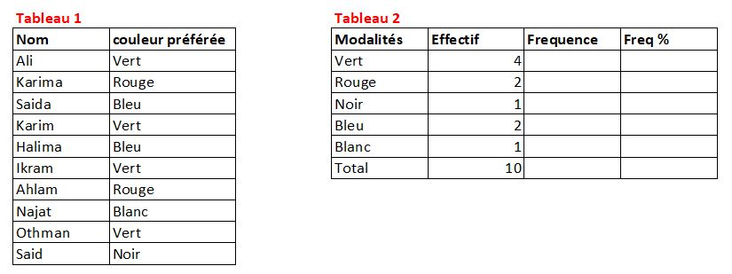
1). Identification
1.1) Identifier la variable étudiée.
1.2) Déterminer le type de cette variable
2). Traitement Manuel :
2.1) Remplir le tableau 2 par les valeurs correspondantes
2.2) Construire la représentation graphique adéquate des fréquences associées
3). Traitement avec le Langage Python :
3.1) Compléter le tableau 2 à l’aide de Python en affichant les valeurs correspondantes.
3.2) Générer la représentation graphique des fréquences associées à l’aide de Python.
# Graphique en barres
couleur ={"Vert" : 4, "Rouge":2, "Noir":1, "Bleu":2, "Blanc":1}
couleur = pd.DataFrame({"couleur":couleur.keys(), "val":couleur.values()})
couleur["Freq"]=couleur["val"]/couleur["val"].sum()*100
plt.bar(couleur['couleur'] , couleur['Freq'], color="red")
plt.xlabel("modalités")
plt.ylabel("frequences en %")
plt.title("diagramme en barre des fréquences en %")
plt.show()
# Graphique circulaire
plt.pie(couleur['Freq'], labels=couleur['couleur'], autopct='%1.1f%%')
plt.title("diagramme circulaire des fréquences en %")
plt.legend()
plt.show()
# Diagramme en barres horizontales
plt.barh(couleur['couleur'] , couleur['Freq'], color="yellow")
plt.xlabel("frequences en %"); plt.ylabel("modalités")
plt.title("Diagramme en barres horizontales des fréquences en %")
couleur
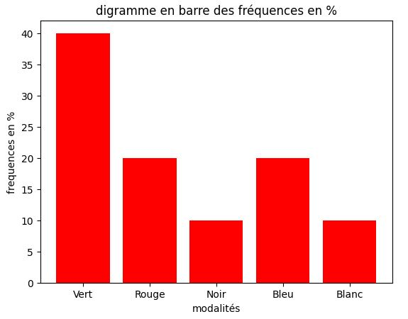
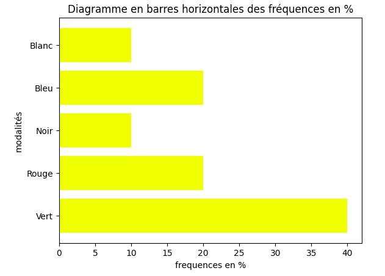
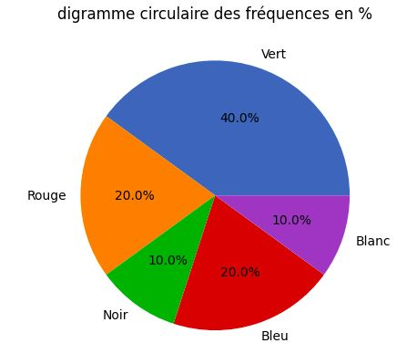
VARIABLES QUALITATIVES ORDINALES¶
Exercice 2
100 personnes ont été interrogées sur leur addiction au chocolat. Les réponses se déclinent comme suit:
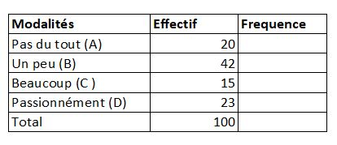
1). Identification
1.1) Identifier la variable étudiée.
1.2) Déterminer le type de cette variable.
2). Traitement Manuel :
2.1) Remplir le tableau par les valeurs correspondantes
2.2) Construire la représentation graphique adéquate des effectifs et des fréquences associées
3). Traitement avec le Langage Python :
3.1) Compléter le tableau à l’aide de Python en affichant les valeurs correspondantes.
3.2) Générer la représentation graphique adéquate des effectifs et des fréquences à l’aide de Python.
# graphique : Camembert
preference={"A" : 20 , "B": 42 , "C": 15, "D": 23}
print(type(preference))
plt.pie(preference.values(), labels = preference.keys(), autopct='%1.1f%%')
plt.title("camembert des fréquences en %")
plt.legend()
# Diagramme en barres horizontales
plt.barh(preference.keys(),preference.values(), color ="orange")
plt.title("Diagramme en barres horizontales des fréquences en %")
plt.show()
# Diagramme en barres
plt.bar(preference.keys(),preference.values())
plt.title("Diagramme en barre des fréquences en %")
plt.xlabel("les préferences")
plt.ylabel("Les fréquences en %")
plt.show()
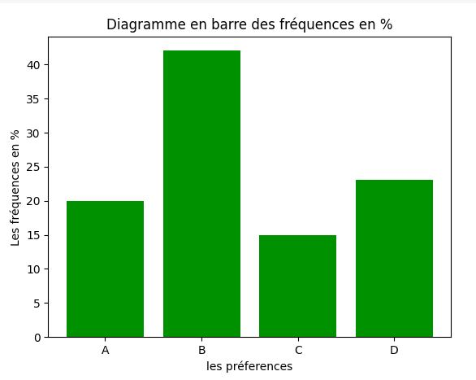
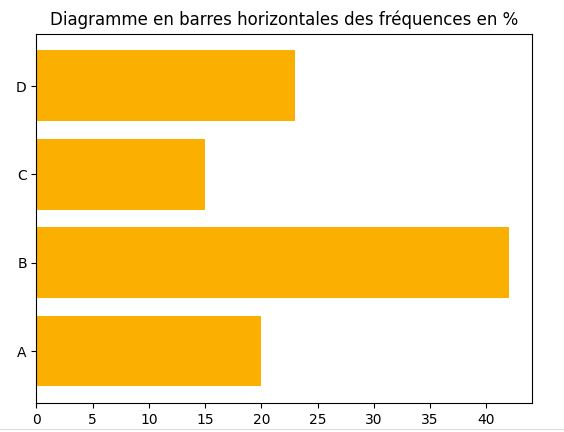
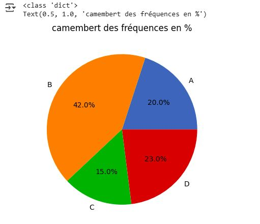
VARIABLES QUANTITATIVES DISCRÈTES¶
Comme représentation graphique d’une variable quantitative discrète, nous utilisons le diagramme en bâtons des effectifs ou des fréquences.
Exemples: les notes obtenues par les étudiants d’une classe donnée
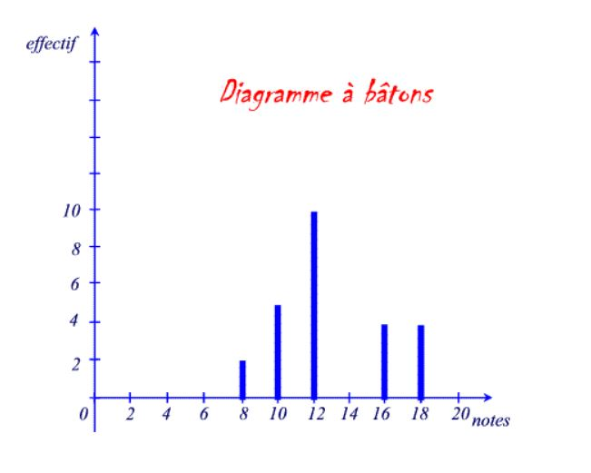
Exercice 3
On donne les notes suivantes:
0,0,0, 4, 5, 8,8,8,8, 10,10,10,10, 14, 16, 18, 20,20,20,20
1). Identification
1.1) Récapituler l’information dans un tableau.
1.2) Identifier la variable étudiée.
1.3) Déterminer le type de cette variable.
2). Traitement Manuel :
2.1) Calculer les fréquences associés à chaque note.
2.1) Construire la représentation graphique adéquate des effectifs et des fréquences associées.
3). Traitement avec le Langage Python :
3.1) Compléter le tableau à l’aide de Python en affichant les valeurs correspondantes.
3.2) Générer la représentation graphique adéquate des effectifs et des fréquences à l’aide de Python.
series = (0,0,0, 4, 5, 8,8,8,8, 10,10,10,10, 14, 16, 18, 20,20,20,20)
series = Counter(series)
df = pd.DataFrame({"series": series.keys(),"effectifs": series.values()})
# tableau récapitulatif des fréquences et des freq. cumulées
df["freq"]=df["effectifs"]/df["effectifs"].sum()*100
df['freq cum'] = df["freq"].cumsum()
print(df)
# Diagramme en bâtons des effectifs
plt.plot(df["series"], df["effectifs"], color = "red")
plt.stem(df["series"], df["effectifs"])
plt.title("Diagramme en bâtons des effectifs")
plt.xlabel("les notes") ; plt.ylabel("les effectifs")
plt.show()
# diagramme des freq cum croissantes
plt.plot(df["series"], df["freq cum"], color = "skyblue")
plt.title("Diagramme des freq cum croissantes")
plt.xlabel("Les notes") ; plt.ylabel("les fréq cum croissantes en %")
# Pour contrôler les limites des axes, on utilise la fonction axis()
plt.axis(xmin = 0, xmax = 22, ymin = -1, ymax = 110)
# Pour rajouter une grille, on utilise la fonction grid()
plt.grid()
plt.show()
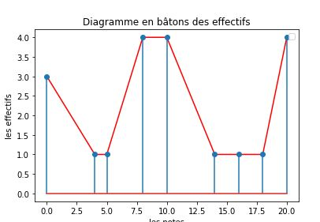
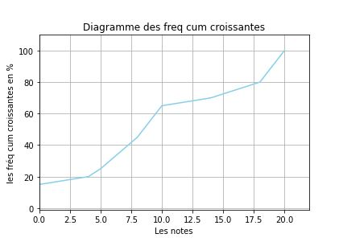
Variable quantitative continue¶
Comme représentation graphique d’une Var. quant. continue, nous utilisons l’histogramme
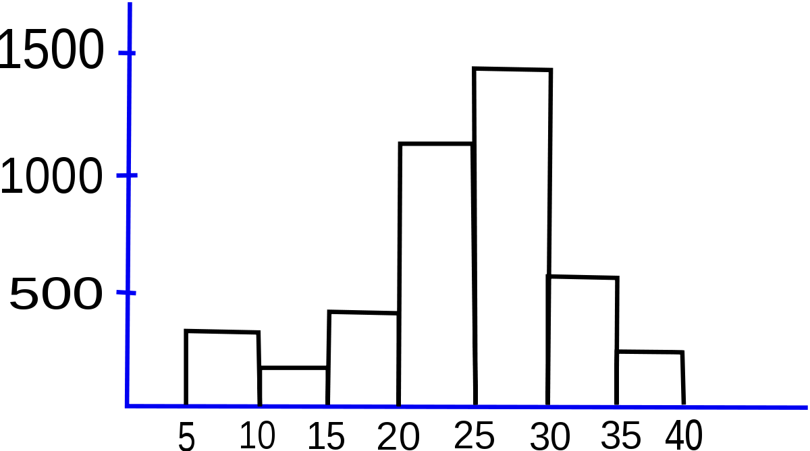
Exercice
La répartition des salaires au sein d’une firme peut être résumée comme suit:
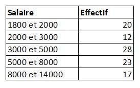
1). Identification
1.1) Identifier la variable étudiée.
1.2) Déterminer le type de cette variable.
2). Traitement Manuel :
2.1) Calculer les fréquences associés à chaque note.
2.1) Construire la représentation graphique adéquate des effectifs et des fréquences associées.
3). Traitement avec le Langage Python :
3.1) Compléter le tableau à l’aide de Python en affichant les valeurs correspondantes.
3.2) Générer la représentation graphique adéquate des effectifs et des fréquences à l’aide de Python.
Exercices d’application¶
Exercice 01¶
Exercice
Vous disposez des données suivantes concernant la satisfaction des clients d’un service :
Niveaux de satisfaction : Très insatisfait, Insatisfait, Neutre, Satisfait, Très satisfait
Effectifs (clients correspondants) : 15, 30, 50, 40, 20
Identifier la variable étudiée et son type.
Récapituler ces données dans un tableau statistique
Calculez les fréquences pour chaque niveau de satisfaction.
Créez un diagramme en barre pour afficher la répartition des clients en fonction de leur niveau de satisfaction.
Exercice 02¶
Exercice
Les données suivantes concernent le niveau d’éducation atteint par un groupe d’individus :
Niveaux d’éducation : Aucun, Primaire, Secondaire, Universitaire, Supérieur
Effectifs (individus correspondants) : 5, 15, 20, 40, 30
Identifier la variable étudiée et son type.
Récapituler ces données dans un tableau statistique
Calculez les fréquences pour chaque niveau d’éducation.
Créez la représentation adéquate pour visualiser la répartition des individus en fonction de leur niveau d’éducation.
Calculez la fréquence cumulée pour chaque niveau d’éducation et générez un graphique pour cette fréquence cumulée.
Exercice 03¶
Exercice
Vous avez les données suivantes concernant les notes d’un groupe d’étudiants :
Notes : 8, 12, 15, 17, 19
Effectifs : 4, 6, 10, 8, 2
Identifier la variable étudiée et son type.
Récapituler ces données dans un tableau statistique
Calculez les fréquences des notes.
Créez un diagramme en bâtons pour afficher la répartition des effectifs.
Calculez la fréquence cumulée et affichez un graphique pour les fréquences cumulées.
Exercice 04¶
Exercice
Vous disposez des données suivantes concernant les préférences de couleurs dans un groupe d’individus :
Couleurs : Rouge, Bleu, Vert, Jaune, Noir
Effectifs (individus correspondants) : 15, 20, 30, 10, 25
Calculez les fréquences pour chaque couleur.
Créez le graphique adéquat pour visualiser la répartition des individus en fonction des couleurs préférées.
Calculez la fréquence cumulée des couleurs et affichez un graphique pour ces fréquences cumulées.
Exercice 05¶
Exercice
Vous disposez des données suivantes concernant les températures maximales mensuelles dans une ville :
Températures (°C) : 18, 22, 25, 27, 30
Effectifs (mois correspondants) : 3, 4, 5, 2, 3
Calculez les fréquences des différentes températures.
Créez un diagramme en bâtons pour visualiser la répartition des effectifs en fonction des températures.
Calculez la fréquence cumulée et générez un graphique pour afficher les fréquences cumulées.
Exercice 05¶
Exercice
Vous avez les données suivantes concernant les tailles des individus dans une population :
Tailles (en cm) : 150-160, 160-170, 170-180, 180-190, 190-200
Effectifs (individus dans chaque tranche de taille) : 12, 25, 30, 15, 8
Calculez les fréquences des différentes tranches de tailles.
Créez un histogramme pour illustrer la répartition des individus en fonction des tailles.
Calculez et affichez la fréquence cumulée des tailles, puis générez un graphique pour ces fréquences cumulées.
Exercice 06¶
Exercice
Les données suivantes concernent la durée des trajets domicile-travail (en minutes) d’une population d’employés :
Durée des trajets (en minutes) : 0-10, 10-20, 20-30, 30-40, 40-50
Effectifs (employés correspondant à chaque intervalle de temps) : 20, 50, 40, 25, 10
Calculez les fréquences pour chaque intervalle de durée de trajet.
Créez la représentation graphique adéquate pour afficher la répartition des employés en fonction de la durée des trajets.
Calculez et affichez la fréquence cumulée des durées de trajets, puis générez un graphique pour ces fréquences cumulées.